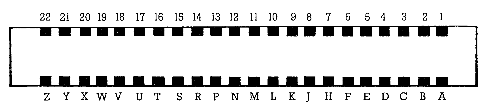

64'er Extra
Das 64’er Extra bringt geballe Informationen über Ihren C 64 zum Heraustrennen und Sammeln. In dieser achten Ausgabe finden Sie eine Übersicht zum Expansion-Port. Damit Sie nicht mehr die verschiedensten Bücher gleichzeitig wälzen müssen, haben wir für Sie in Klartext die Funktionen aller Leitungen des Expansion-Ports beschrieben.
Am Expansion-Port sind alle Leitungen herausgeführt, die für eine hardwaremäßige Erweiterung Ihres Computers notwendig sind. In den meisten Unterlagen findet man allerdings Angaben, die Ihnen bei der Durchdringung des Signaldschungels nicht entscheidend weiterhelfen. Mit unserer achten Ausgabe des 64’er Extra wollen wir Ihnen eine kompakte aber dennoch ausführliche Information über den Expansion-Port zur Verfügung stellen. Keine Leitung des Expansion-Ports wird ausgelassen. Die Abbildung zeigt den Expansion-Port, wie er von hinten betrachtet am Computer zu sehen ist. Das heißt die Zahlen gelten für die obere Kontaktleiste und beginnen von hinten gesehen rechts mit 1. In der Tabelle finden Sie häufig einen Strich über einer Signalbezeichnung. Hier handelt es sich um sogenannte »Nicht-Anweisungen«, die auch als Low-aktiv bezeichnet werden. Das bedeutet, wenn diese Leitung auf 0 (Low) gelegt wird, ist die betreffende Funktion aktiv.

| Pin | Name | Beschreibung | Bemerkung | Eingang/Ausgang |
| 1 | GND | Systemmasse | A | |
| 2 | +5 V DC | Betriebsspannung | Belastung maximal 450 mA | A |
| 3 | +5 V DC | Betriebsspannung | A | |
| 4 | IRQ | Interrupt-Anforderung | Wenn IRQ auf 0 gesetzt wird, arbeitet der Prozessor den momentanen Befehl ab, rettet den Programmzähler und das Statusregister auf den Stapel und lädt den Programmzähler mit den Speicherzellen $FFFE und $FFFF. Diese Speicherzellen enthalten die Einsprungadresse für die IRQ-Routine des Betriebssystems ($FF48). | E |
| 5 | R/W | Lesen/Schreiben | Der Prozessor setzt diese Leitung bei jedem Lesezyklus (beispielsweise LDA) auf 1 und bei jedem Schreibzyklus (beispielsweise STA) auf 0. | A |
| 6 | DOT CLOCK | Taktfrequenz des Video Interface Controller (VIC) | 7,80 MHz für PAL | A |
| 7 | I/O1 | Ein-/Ausgabe-Bereich 1 ($DE00-$DEFF) | Ist die Speicherzelle 1 (Zeropage) auf $37 gesetzt und es wird eine Adresse zwischen $DE00 und $DEFF angesprochen, so geht diese Leitung auf 0 (Chip Select für externe Peripheriebausteine, ungepuffert). | A |
| 8 | GAME | Einblendung externer Bausteine Bereich ($A000 — $BFFF) | Wird GAME auf 0 gelegt, schaltet der Computer den Basic-Interpreter ab und erzeugt für den Bereich von $A000 bis $BFFF ein Chip Select. Wird nun eine Adresse in diesem Bereich angesprochen, so geht die Leitung ROMH (Pin B) auf 0. | E |
| 1 | GND | Systemmasse | A | |
| 2 | +5 V DC | Betriebsspannung | Belastung maximal 450 mA | A |
| 3 | +5 V DC | Betriebsspannung | A | |
| 4 | IRQ | Interrupt-Anforderung | Wenn IRQ auf 0 gesetzt wird, arbeitet der Prozessor den momentanen Befehl ab, rettet den Programmzähler und das Statusregister auf den Stapel und lädt den Programmzähler mit den Speicherzellen $FFFE und $FFFF. Diese Speicherzellen enthalten die Einsprungadresse für die IRQ-Routine des Betriebssystems ($FF48). | E |
| 5 | R/W | Lesen/Schreiben | Der Prozessor setzt diese Leitung bei jedem Lesezyklus (beispielsweise LDA) auf 1 und bei jedem Schreibzyklus (beispielsweise STA) auf 0. | A |
| 6 | DOT CLOCK | Taktfrequenz des Video Interface Controller (VIC) | 7,80 MHz für PAL | A |
| 7 | I/O1 | Ein-/Ausgabe-Bereich 1 ($DE00-$DEFF) | Ist die Speicherzelle 1 (Zeropage) auf $37 gesetzt und es wird eine Adresse zwischen $DE00 und $DEFF angesprochen, so geht diese Leitung auf 0 (Chip Select für externe Peripheriebausteine, ungepuffert). | A |
| 8 | GAME | Einblendung externer Bausteine Bereich ($A000 — $BFFF) | Wird GAME auf 0 gelegt, schaltet der Computer den Basic-Interpreter ab und erzeugt für den Bereich von $A000 bis $BFFF ein Chip Select. Wird nun eine Adresse in diesem Bereich angesprochen, so geht die Leitung ROMH (Pin B) auf 0. | E |
| 9 | EXROM | Einblendung externer Bausteine Bereich ($8000 — $9FFF) | Wird EXROM auf 0 gelegt, schaltet der Computer das RAM für den Bereich $8000 bis $9FFF ab und erzeugt ein Chip Select. Wird nun eine Adresse in diesem Bereich angesprochen, geht die Leitung ROML (Pin 11) auf 0. | E |
| 10 | I/O2 | Ein-/Ausgabe-Bereich 2 ($DF00 — $DFFF) | Ist die Speicherzelle 1 (Zeropage) auf $37 gesetzt und eine Adresse zwischen $DF00 und $DFFF wird angesprochen, so geht diese Leitung auf 0 (Chip Select für externe Peripheriebausteine, gepuffert) | A |
| 11 | ROML | Chip Select für den Bereich I (EXROM) | siehe Pin 9 (EXROM) | A |
| 12 | BA | Buszugriff vom VIC | BA liegt auf 1, wenn der VIC auf den Daten- oder Adreßbus zugreift. Ist BA = 1, so dürfen keine externen Bausteine auf den Bus zugreifen. | A |
| 13 | DMA | Direkter Zugriff von externen Bausteinen auf internes RAM | Liegt DMA auf 0, so hält der Prozessor nach dem momentanen Lesezyklus an, damit der externe Baustein auf den Bus zugreifen kann. Wenn DMA während eines Schreibzyklus auf 0 gesetzt wird, ignoriert der Prozessor dies bis zum nächsten Lesezyklus. Ist die Leitung wieder hochohmig, setzt der Prozessor seine Arbeit fort. | E |
| 14 15 16 17 18 19 20 21 |
D7 D6 D5 D4 D3 D2 D1 D0 |
Datenbus Bit 7 Datenbus Bit 6 Datenbus Bit 5 Datenbus Bit 4 Datenbus Bit 3 Datenbus Bit 2 Datenbus Bit 1 Datenbus Bit 0 |
Der Datenbus ist nicht gepuffert | E/A |
| 22 | GND | Systemmasse | A | |
| A | GND | Systemmasse | A | |
| B | ROMH | Chip Select für Bereich II (GAME) | siehe Pin 8 (GAME) | A |
| C | RESET | Computer-Kaltstart | Liegt RESET auf 0, so werden Stapel und Statusregister neu initialisiert. Der Programmzähler wird mit dem Inhalt der Speicherzellen $FFFC und $FFFD geladen. Die Speicherzellen enthalten die Einsprungadresse für die RESET-Routine des Betriebssystems ($FCE2). | A |
| D | NMI | Nicht maskierbarer Interrupt (Computer-Warmstart, identisch mit RUN/STOP-RESTORE) | Der Prozessor erkennt diese Interrupt-Anforderung mit fallender Flanke auf dieser Leitung, das heißt mit einem Übergang von 1 auf 0. Der Befehl wird abgearbeitet und der Programmzähler sowie das Statusregister auf den Stapel gerettet. Anschließend wird der Programmzähler mit dem Inhalt der Speicherzellen $FFFA und $FFFB geladen. Diese Speicherzellen enthalten die Einsprungadresse für die NMI-Routine des Betriebssystems ($FE43). | E |
| E | Φ 2 | Systemtakt (0,98 MHz) | Bei fallender Flanke von Φ 2 sind Daten gültig | A |
| F H J K L M N P R S T U V W X Y |
A 15 A 14 A 13 A 12 A 11 A 10 A 9 A 8 A 7 A 6 A 5 A 4 A 3 A 2 A 1 A 0 |
Adreß-Bus Bit 15 Adreß-Bus Bit 14 Adreß-Bus Bit 13 Adreß-Bus Bit 12 Adreß-Bus Bit 11 Adreß-Bus Bit 10 Adreß-Bus Bit 9 Adreß-Bus Bit 8 Adreß-Bus Bit 7 Adreß-Bus Bit 6 Adreß-Bus Bit 5 Adreß-Bus Bit 4 Adreß-Bus Bit 3 Adreß-Bus Bit 2 Adreß-Bus Bit 1 Adreß-Bus Bit 0 |
Der Adreß-Bus ist nicht gepuffert | E/A |
| Z | GND | Systemmasse | A |